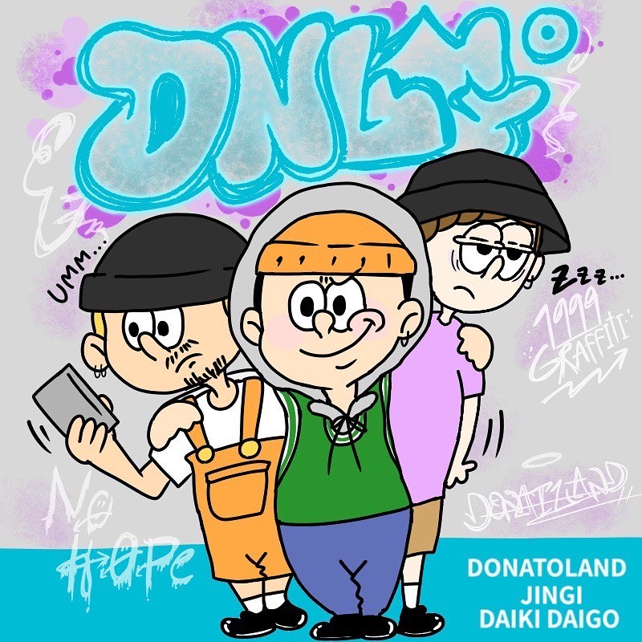
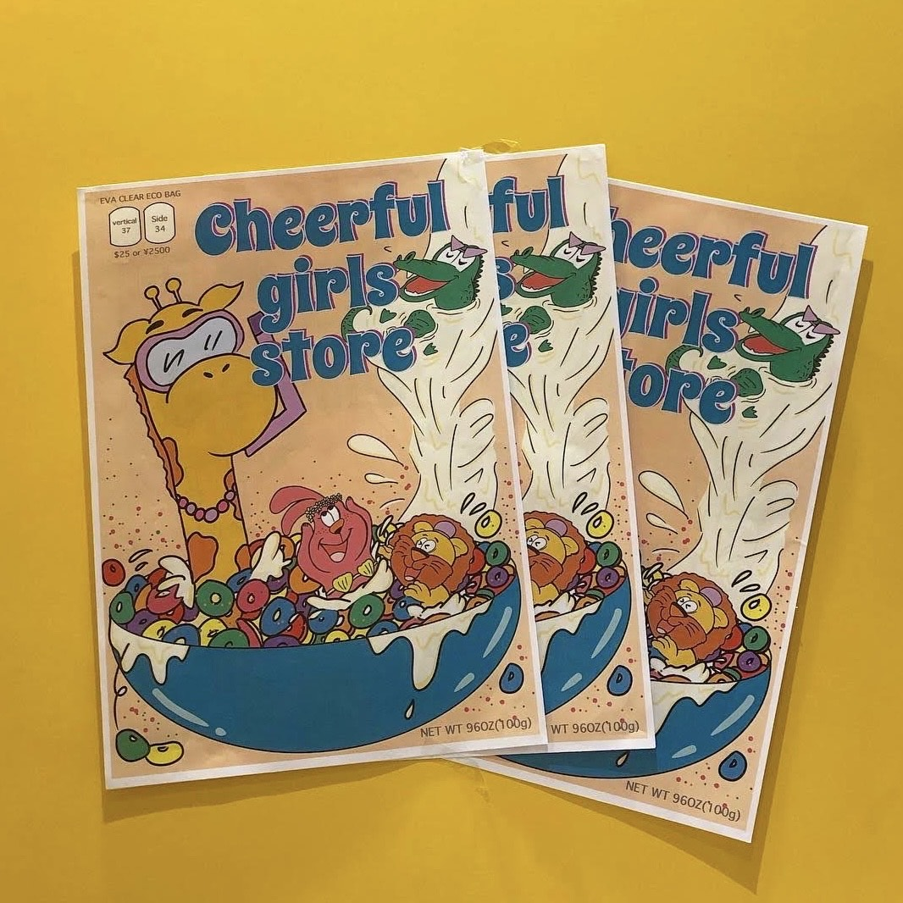
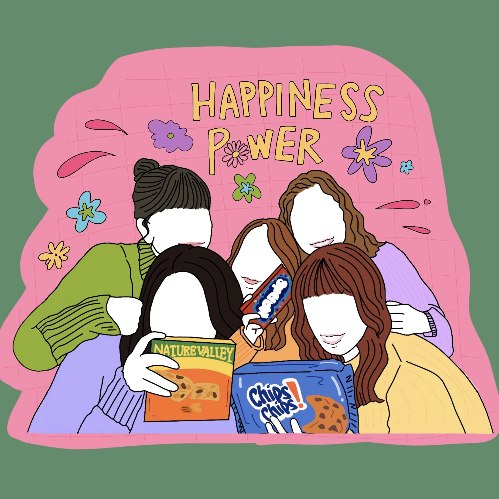
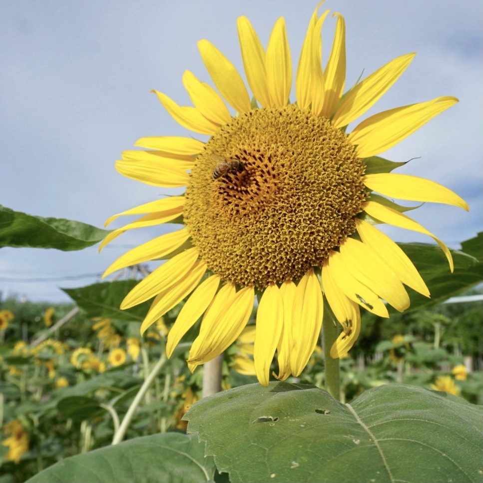
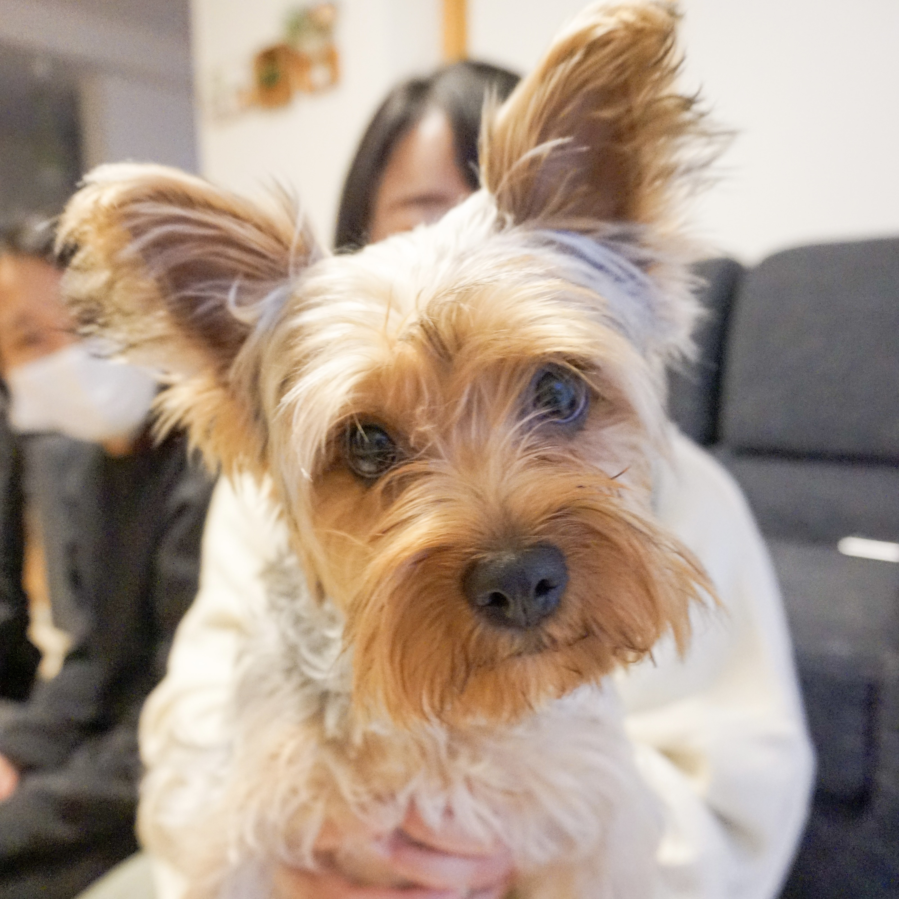
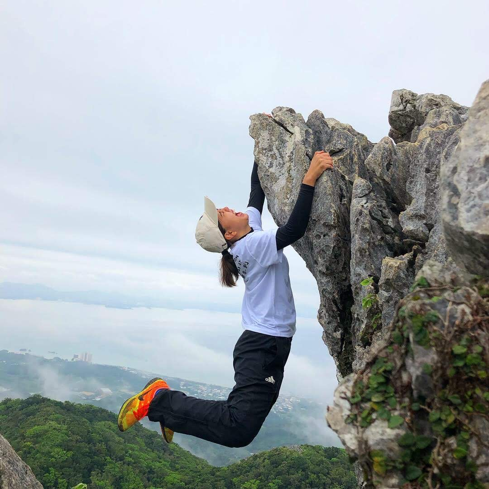
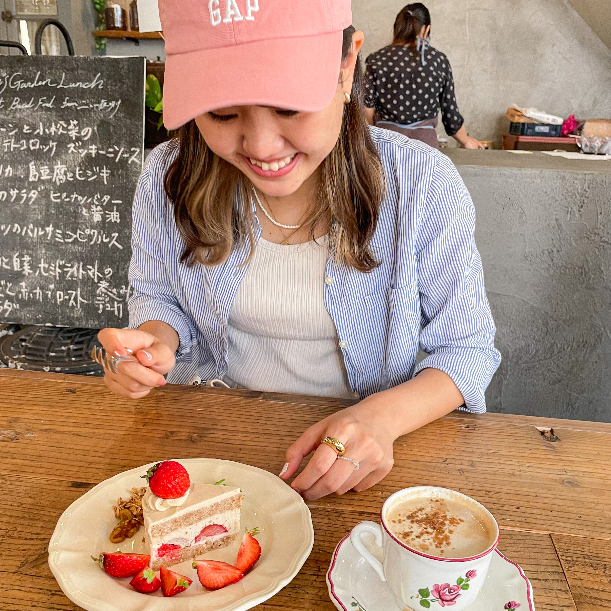
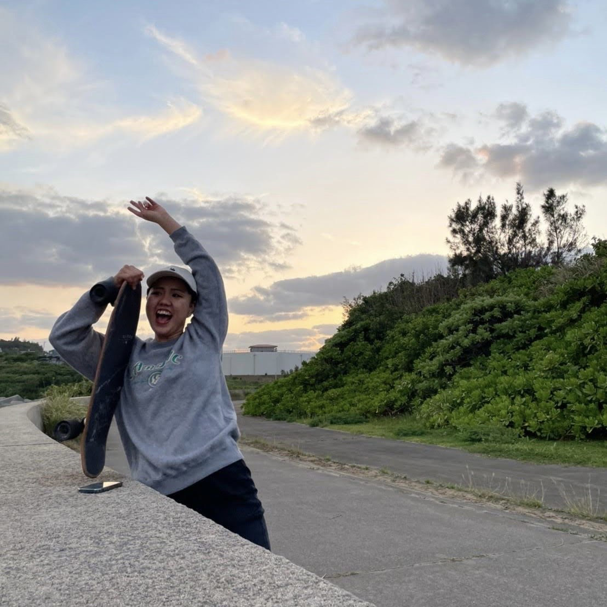

＼小さいころから絵を描くことが好きです。キャラクターや模写が得意です／
Illustration
-

ドネイトランド -

-

＼20歳の誕生日で買ってもらったカメラで何気ない日常をパシャリ／
Photo
-

-

-

＼なんでも楽しめる性格は、お父さん譲り...？／
Others
-

身体を動かすこと（走る以外）は基本好きです！いつか富士山登りたい...
-

カフェ巡り！落ち着いたら、都内のカフェ巡りもはじめたい。おススメあれば教えてください＾＾
-

でも意外と誘いがない日は家でゴロゴロタイプ。最近はアニメブーム！（写真は全く関係なし）